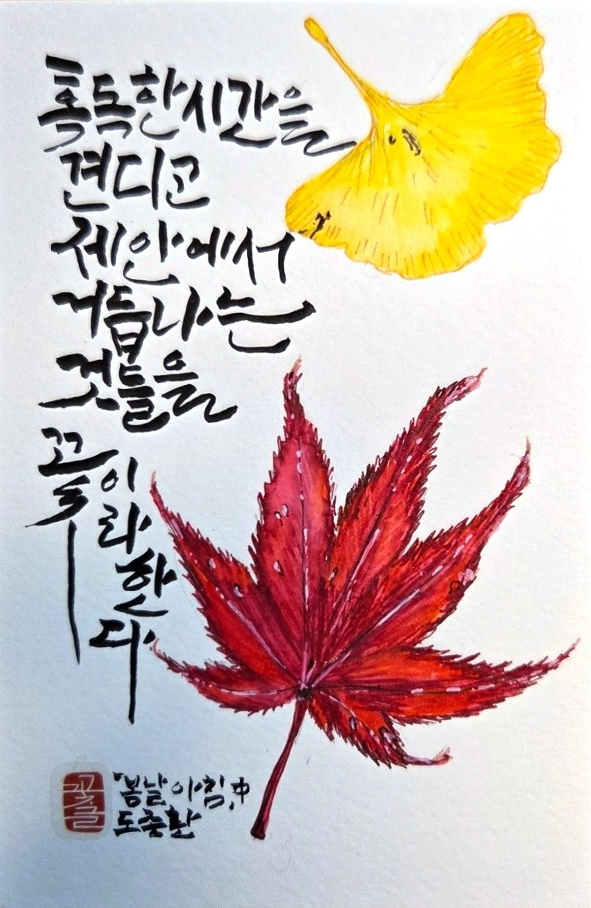

일주일에 한 번, 월요일 수업에서 한 것을 그 주의 기록으로 남깁니다. 지금은 엽서 한 장에 수채로 낙엽을 그리고 그 옆에 가을 문구를 하나 쓰는 정도입니다. 잘 쓴 글씨보다 그 주의 마음이 남기를 바라면서.

혹독한 시간을 견디고 제 안에서 거듭나는 것들을 꽃이라 한다47주 · 2026년 11월 18일
엽서 · 수채화 물 번짐 · 캘리그라피
이번 엽서에는 노란 은행잎 한 장과 붉은 단풍잎 한 장을 나란히 그렸다. 글씨는 도종환 시인의 「봄날 아침」에서 가져온 한 구절이다. 엽서 아래에는 출처를 작게 적고 그 옆에 낙관을 찍었다. 아직 배우는 중이라 서툰 글씨지만, 이번 주에 마음에 담아 둔 문장은 이 한 장으로 남는다.